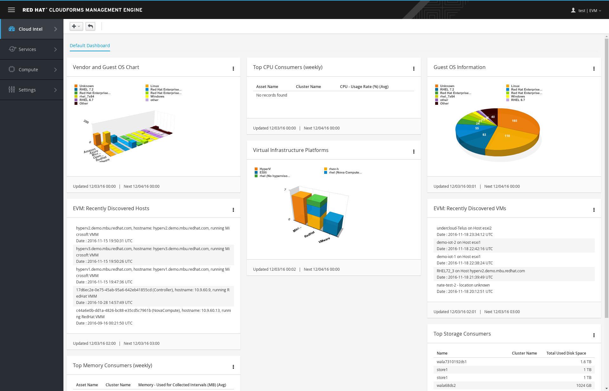

Explore Access Control
Go to Settings → Configuration and select the Access Control accordion.

Configuration Dashboard
Access Control
Add a role by modifying a copy of an existing role:
Select Roles → EvmRole-user.
EvmRole-user Role
Click (Configuration), then click (Copy).

EvmRole-user Copy Role
- For Name, enter Consumer1-Role.
- On the right, expand Services → Catalogs Explorer → Service Catalogs.
- Check the Modify box and click Add.
EvmRole-user Add Role
Add a group:
- Select Groups.
- Click (Configuration), then click (Add).
- For Description, enter Consumer1-Group.
- For Role, select Consumer-Role.
- For Project/Tenant, select Red Hat.
- Click Add.

Add Group
Add a user:
- Select Users.
- Click (Configuration), then click (Add).
- Fill out the resulting form with consumer as the username and a password of your choosing.
- Select Consumer-Group for Group and click Add.
Add User
Account Verification
In the top right corner, click Administrator | EVM and select Logout.

Logout
Instead of logging in and out of the admin account to do this, you can open a new browser or a "private" or "incognito" window in the same browser.
- Log in to CloudForms as the consumer user with the password you set.
- Observe that the default dashboard is different from the administrator dashboard.
- This dashboard has a different set of widgets and fewer selections in the left bar (Cloud Intelligence, Services, Compute, and Settings).
- Explore the data provided.

Customer-Group User
This data is more specific and targeted to end users.